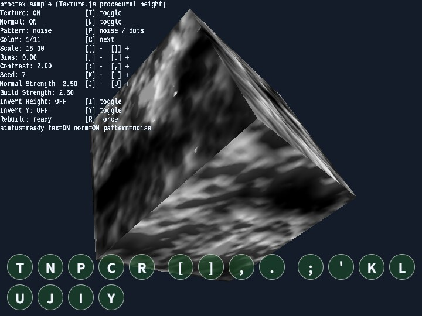

proctex
English | 日本語

Overview
- Built on
WebgApp, this sample lets you inspect procedural height-map generation and normal-map generation fromTexture.jsat the same time - It uses the same height map both as a color texture and as a normal map, then displays a slowly rotating cube created with
Shape.mapCubein the center of the screen - By using
WebgAppinput and HUD, the sample keeps the key-operation guide and the current parameters visible in the same screen
How to Run
- Open ./proctex.html
- Use a browser with WebGPU support, and check the help panel and HUD together with the sample when needed
webg Features Used
Texture.makeProceduralHeightMapPixels: procedural height-map generationTexture.buildNormalMapFromHeightMap: normal-map generation from the height mapShape.mapCube: UV-unwrapped cubeSmoothShader: texture + normal-map renderingInputController / Touch: unifies keyboard input and touch-button inputWebgAppHUD: displays the operation guide and current parameters
Checkpoints
- Confirm that the appearance changes immediately when texture on/off and normal-map on/off are toggled
- Change
pattern / scale / contrast / bias / seedand confirm that the generated pattern is rebuilt - Confirm that changing
normal strengthchanges how strongly the surface relief is emphasized - Confirm that touch buttons are shown even on desktop and that the same key operations can be pressed there directly
Controls
T: toggle texture on or offN: toggle the normal map on or offP: switch the pattern (noise / dots)C: switch the shader color preset[ / ]: decrease / increase scale, / .: decrease / increase bias; / ': decrease / increase contrastK / L: decrease / increase seedU / J: increase / decrease normal strengthI: toggleinvertHeighton or offY: toggleinvertYon or offR: force regeneration with the current parameters, although regeneration normally happens automatically- The touch buttons are shown with the same key assignments and can be inspected directly even on desktop
Regeneration Behavior
P / [ / ] / , / . / ; / ' / K / L / I / Ytrigger automatic regeneration when changedRis used when you want to explicitly rerun regeneration while keeping the same parameters